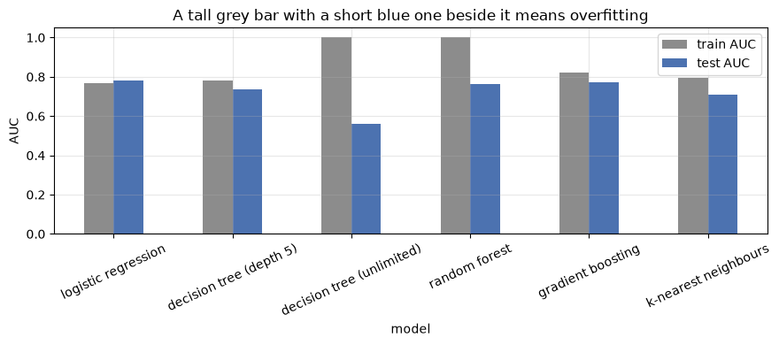

Building ML Models with Scikit-learn
Applied ML in Production · Session 4
You already know these algorithms. Logistic regression, decision trees, random forests, KNN — you have derived them, plotted them, and been examined on them.
This session is not a second pass over the maths. It is about the thing nobody teaches explicitly and everybody needs daily: scikit-learn presents every one of those algorithms through the same three-method interface, so swapping one for another is a one-line change. Once you see that, the question stops being "how does this algorithm work" and becomes "which one do I choose, and how do I defend the choice".
We answer both, on the loan problem, in one sitting.
How to work through this
Type the code. There is very little of it, and the point is the shape of the code — the same four lines appear for every model in the library.
Run each cell, read the output, then read the commentary. If a cell errors, run from the top.
Learning objectives
After this session you will be able to:
- State the estimator contract —
fit,predict,transform— and use it on any scikit-learn model without reading its documentation first. - Tell a hyperparameter from a learned parameter, and find both on a fitted model.
- Swap one estimator for another and compare them fairly on the same split.
- Recognise overfitting from a train-versus-test gap.
- Choose an estimator from the constraints of the problem — data size, explainability, latency, feature types — rather than by habit.
- Apply the same contract to a regression problem.
- Compose a scaler and a model into a single object with
make_pipeline. - Score a single new applicant and turn the probability into a decision.
Setup
We reuse session 2's honest feature set: leak removed, missingness flagged.
%matplotlib inline
from pathlib import Path
import matplotlib.pyplot as plt
import numpy as np
import pandas as pd
from sklearn.model_selection import train_test_split
from sklearn.preprocessing import StandardScaler
plt.rcParams.update({"figure.figsize": (9, 4), "axes.grid": True, "grid.alpha": 0.3})
pd.set_option("display.width", 120)
def find_data(filename="loan_default.csv"):
for folder in [Path.cwd(), *Path.cwd().parents]:
candidate = folder / "data" / filename
if candidate.exists():
return candidate
raise FileNotFoundError(f"could not find data/{filename}")
loans = pd.read_csv(find_data(), parse_dates=["application_date"])
features = loans[["loan_amount", "tenure_months", "interest_rate", "previous_loans",
"days_past_due_history", "annual_income", "credit_score",
"sector", "employment_type", "has_collateral"]].copy()
features["income_missing"] = features["annual_income"].isna().astype(int)
features["score_missing"] = features["credit_score"].isna().astype(int)
X = pd.get_dummies(features, drop_first=True).astype(float)
y = loans["defaulted"]
X_train, X_test, y_train, y_test = train_test_split(
X, y, test_size=0.25, stratify=y, random_state=42
)
medians = X_train.median()
X_train, X_test = X_train.fillna(medians), X_test.fillna(medians)
scaler = StandardScaler().fit(X_train)
X_train_scaled, X_test_scaled = scaler.transform(X_train), scaler.transform(X_test)
print(f"train {X_train.shape}, test {X_test.shape}")
train (9000, 18), test (3000, 18)
1. The estimator contract
Every model in scikit-learn is an estimator, and every estimator honours the same contract:
| Method | What it does | Who has it |
|---|---|---|
fit(X, y) |
Learn from data | Every estimator |
predict(X) |
Produce a label or a number | Every model |
predict_proba(X) |
Produce class probabilities | Most classifiers |
transform(X) |
Produce modified data | Scalers, encoders, imputers |
score(X, y) |
A default metric, for a quick look | Every model |
That is the whole interface. A scaler is fit + transform. A classifier is
fit + predict. Nothing else has to be memorised.
from sklearn.linear_model import LogisticRegression
model = LogisticRegression(max_iter=1000, class_weight="balanced") # not trained yet
model.fit(X_train_scaled, y_train) # now it is
print("predict returns labels: ", model.predict(X_test_scaled)[:5])
print("predict_proba returns columns:", model.predict_proba(X_test_scaled).shape,
"-> [P(repaid), P(default)]")
print("probability of default, first five applications:",
model.predict_proba(X_test_scaled)[:5, 1].round(3))
predict returns labels: [1 1 0 1 1]
predict_proba returns columns: (3000, 2) -> [P(repaid), P(default)]
probability of default, first five applications: [0.722 0.518 0.398 0.928 0.921]
Hyperparameters versus learned parameters
Two kinds of number live on a fitted model, and confusing them causes real bugs.
Hyperparameters are your choices. You pass them to the constructor, they are visible before training, and tuning them is session 6.
Learned parameters are what fit discovered. Scikit-learn marks every one
with a trailing underscore — coef_, classes_, feature_importances_.
That underscore is a convention worth knowing: it means "this did not exist until
you called fit".
print("hyperparameters you chose:")
print(" class_weight =", model.get_params()["class_weight"])
print(" max_iter =", model.get_params()["max_iter"])
print("\nlearned parameters (note the trailing underscore):")
print(" classes_ =", model.classes_)
print(" intercept_ =", model.intercept_.round(3))
coefficients = pd.Series(model.coef_[0], index=X.columns).sort_values()
print("\n three strongest pushes toward 'repaid':")
print(coefficients.head(3).round(3).to_string())
print("\n three strongest pushes toward 'default':")
print(coefficients.tail(3).round(3).to_string())
hyperparameters you chose:
class_weight = balanced
max_iter = 1000
learned parameters (note the trailing underscore):
classes_ = [0 1]
intercept_ = [-0.374]
three strongest pushes toward 'repaid':
credit_score -0.337
annual_income -0.321
has_collateral_Yes -0.133
three strongest pushes toward 'default':
days_past_due_history 0.176
loan_amount 0.322
interest_rate 0.612
Read those coefficients as a sentence: a higher credit score pushes toward repayment, a higher interest rate pushes toward default. The second one is the lender's own pricing showing up in the data, as we saw in session 3 — predictive, not causal.
This interpretability is the reason linear models survive in regulated lending long after fancier options exist. You can hand that table to a credit committee.
2. Swapping the estimator
Because the contract is identical, comparing five algorithms is a loop. The only thing that varies is which matrix goes in — scaled or unscaled.
from sklearn.ensemble import GradientBoostingClassifier, RandomForestClassifier
from sklearn.metrics import roc_auc_score
from sklearn.neighbors import KNeighborsClassifier
from sklearn.tree import DecisionTreeClassifier
candidates = {
# name: (estimator, needs scaling)
"logistic regression": (LogisticRegression(max_iter=1000, class_weight="balanced"), True),
"decision tree (depth 5)": (DecisionTreeClassifier(max_depth=5, class_weight="balanced", random_state=42), False),
"decision tree (unlimited)": (DecisionTreeClassifier(class_weight="balanced", random_state=42), False),
"random forest": (RandomForestClassifier(n_estimators=200, class_weight="balanced", random_state=42), False),
"gradient boosting": (GradientBoostingClassifier(random_state=42), False),
"k-nearest neighbours": (KNeighborsClassifier(n_neighbors=25), True),
}
rows = []
for name, (estimator, needs_scaling) in candidates.items():
train_X = X_train_scaled if needs_scaling else X_train
test_X = X_test_scaled if needs_scaling else X_test
estimator.fit(train_X, y_train) # <- the same line, every time
rows.append({
"model": name,
"train AUC": roc_auc_score(y_train, estimator.predict_proba(train_X)[:, 1]),
"test AUC": roc_auc_score(y_test, estimator.predict_proba(test_X)[:, 1]),
})
comparison = pd.DataFrame(rows).set_index("model").round(3)
comparison["gap"] = (comparison["train AUC"] - comparison["test AUC"]).round(3)
print(comparison.to_string())
train AUC test AUC gap
model
logistic regression 0.769 0.782 -0.013
decision tree (depth 5) 0.783 0.735 0.048
decision tree (unlimited) 1.000 0.560 0.440
random forest 1.000 0.763 0.237
gradient boosting 0.822 0.772 0.050
k-nearest neighbours 0.796 0.711 0.085
Four things in that table are worth more than the winner.
The simplest model wins. Logistic regression, at 0.782, beats every ensemble here. That is common on small, tidy, mostly-linear tabular data and it surprises students every year. Complexity is a cost you pay when the data demands it.
The unlimited tree memorised the training set. Train AUC 1.000, test AUC
0.560 — barely better than guessing. It learned 9,000 individual applications
rather than the pattern behind them. This is overfitting in its purest form,
and the gap column is how you spot it.
The random forest also has a train AUC of 1.000 — and still generalises. Averaging hundreds of overfitted trees cancels most of their individual errors. A large gap is a warning sign, not a verdict; read it together with the test score.
Scaling changed nothing for the trees. They split on order, and order survives rescaling. It matters enormously for logistic regression and KNN, which measure distances and gradients.
One detail that confuses people every year: logistic regression's gap is slightly negative — it scored a shade higher on test than on train. That is not a miracle, it is the luck of one particular split. Gaps of a hundredth or two in either direction are noise; gaps of 0.4, like the unlimited tree's, are not.
comparison[["train AUC", "test AUC"]].plot.bar(rot=25, color=["#8C8C8C", "#4C72B0"])
plt.ylabel("AUC")
plt.title("A tall grey bar with a short blue one beside it means overfitting")
plt.tight_layout()
plt.show()

3. What actually changes when you swap
The line of code is identical. Everything around it is not.
| Logistic regression | Decision tree | Random forest / boosting | KNN | |
|---|---|---|---|---|
| Needs scaling | Yes | No | No | Yes |
| Handles non-linearity | Only if you build it (session 3) | Yes | Yes | Yes |
| Explainable | Coefficients, one per feature | The tree itself, if shallow | Importances only | Barely |
| Training cost | Very low | Very low | Moderate to high | None — it defers the work |
| Prediction cost | Very low | Very low | Moderate | High: compares to every training row |
| Key hyperparameters | C, penalty, class_weight |
max_depth, min_samples_leaf |
n_estimators, max_depth, learning_rate |
n_neighbors, metric |
| Main failure mode | Underfits curved patterns | Overfits without a depth limit | Slow, opaque | Falls apart in high dimensions |
Two practical notes that cost teams real time:
Prediction cost is a deployment constraint, not a detail. KNN stores the training set and compares against it at prediction time — fine in a notebook, awkward in a service that must answer in milliseconds.
Randomness needs pinning. Trees, forests, and boosting sample. Without
random_state, two runs give two different models, and you cannot tell a real
improvement from noise. Set it everywhere, always.
4. Choosing an estimator
There is no best algorithm. There is a best algorithm for a set of constraints, and the constraints come from the charter you wrote in session 1.
| If the project needs... | Start with |
|---|---|
| Explainable decisions, regulated setting | Logistic regression, or a shallow tree |
| Strong accuracy on tabular data, explainability secondary | Gradient boosting (XGBoost, LightGBM, HistGradientBoosting) |
| A baseline in five minutes | Logistic regression |
| Predictions in microseconds | Linear model |
| Mixed categorical and numeric, minimal preprocessing | Tree ensembles |
| Very little data (hundreds of rows) | Linear or a shallow tree; ensembles will overfit |
The working rule: start with the simplest thing that could work, measure it, and only add complexity when the measurement demands it. A gradient boosting model that beats logistic regression by 0.004 AUC is not worth the deployment weight, the training time, and the explanation you now owe a regulator.
Our charter asks for explainable declines. That plus the table above makes logistic regression the right choice here — and it also happens to score best. It will not always be so convenient.
5. The same contract for regression
Classification predicts a class; regression predicts a number. The code is the same four lines — only the estimator, and the metrics, change.
Suppose the credit team asks a different question: "what interest rate would this application normally be priced at?" — useful for spotting inconsistent pricing between branches.
from sklearn.ensemble import RandomForestRegressor
from sklearn.linear_model import LinearRegression
from sklearn.metrics import mean_absolute_error, r2_score
rate_features = loans[["loan_amount", "tenure_months", "previous_loans",
"days_past_due_history", "credit_score", "annual_income"]]
rate_features = rate_features.fillna(rate_features.median())
rate = loans["interest_rate"]
A_train, A_test, r_train, r_test = train_test_split(
rate_features, rate, test_size=0.25, random_state=42
)
for name, estimator in [("linear regression", LinearRegression()),
("random forest", RandomForestRegressor(n_estimators=100, random_state=42))]:
estimator.fit(A_train, r_train)
predicted = estimator.predict(A_test)
print(f"{name:<20} MAE {mean_absolute_error(r_test, predicted):.2f} percentage points "
f"R² {r2_score(r_test, predicted):.3f}")
linear regression MAE 0.78 percentage points R² 0.565
random forest MAE 0.75 percentage points R² 0.587
Same fit, same predict, different metrics. MAE says the typical prediction
is off by about 0.8 percentage points of interest; R² says the features
explain a bit under 60% of the variation in pricing.
Note there is no predict_proba here — a regressor has nothing to be probable
about. That is the only part of the contract that changes.
Sessions 5 and 6 go properly into metrics. For now, the point is that the whole library works this way: learn the contract once, and every estimator in it, including ones written years from now, is already familiar.
6. Composing steps into one object
Session 2 insisted: fit every transformation on the training data only. Doing that by hand — scaler here, model there, remember the order — is exactly the kind of discipline that fails at 6pm on a Friday.
make_pipeline chains transformers and a final estimator into a single
estimator that still honours the contract. One fit, one predict, and the
scaler can no longer see the test set by accident.
from sklearn.pipeline import make_pipeline
pipeline = make_pipeline(
StandardScaler(),
LogisticRegression(max_iter=1000, class_weight="balanced"),
)
pipeline.fit(X_train, y_train) # the scaler is fitted on TRAIN, inside
probabilities = pipeline.predict_proba(X_test)[:, 1]
print(f"pipeline test AUC: {roc_auc_score(y_test, probabilities):.3f}")
print("steps:", [name for name, _ in pipeline.steps])
pipeline test AUC: 0.782
steps: ['standardscaler', 'logisticregression']
The same 0.782, with the leakage risk engineered out rather than remembered.
Session 7 extends this to ColumnTransformer, which lets one pipeline apply
different treatment to numeric and categorical columns, and makes the whole
preparation chain a single saveable object.
7. Making a prediction for one applicant
The end of the line: a real application arrives, and the model has to answer.
applicant = {
"loan_amount": 800_000,
"tenure_months": 24,
"interest_rate": 14.5,
"previous_loans": 0,
"days_past_due_history": 30,
"annual_income": 600_000,
"credit_score": 545,
"income_missing": 0,
"score_missing": 0,
"sector_Construction": 1,
}
# Build a one-row frame with exactly the training columns; anything unset is 0.
new_application = pd.DataFrame([applicant]).reindex(columns=X_train.columns, fill_value=0)
probability = pipeline.predict_proba(new_application)[0, 1]
THRESHOLD = 0.15 # chosen in session 3, owned by the business
decision = "SEND TO SENIOR REVIEW" if probability >= THRESHOLD else "auto-approve"
print(f"probability of default: {probability:.1%}")
print(f"threshold in force: {THRESHOLD:.0%}")
print(f"decision: {decision}")
probability of default: 87.4%
threshold in force: 15%
decision: SEND TO SENIOR REVIEW
That is the whole product, in three lines: a probability, a threshold, a decision.
Everything else in this module — preparation, features, metrics, tuning, tracking, serving, monitoring — exists to make those three lines trustworthy.
The reindex line matters more than it looks. The model was trained on a fixed
list of columns in a fixed order, and it will happily produce a confident number
from a misaligned row. Session 9 replaces this hand-built frame with a validated
API request that rejects a bad payload instead of scoring it.
Your turn
1. Add an estimator. Put HistGradientBoostingClassifier and
GaussianNB into the candidates dictionary and re-run the loop. Do either
beat logistic regression? Which needed scaling?
2. Close the tree's gap. The unlimited tree scored 1.000 on train and 0.560
on test. Try max_depth of 3, 5, 10 and 20. Plot train and test AUC against
depth. Where do the two lines cross over from underfitting to overfitting?
3. Break the contract deliberately. Fit KNeighborsClassifier on the
unscaled training data and compare its AUC to the scaled version. Explain the
difference in one sentence using what KNN measures.
4. Read a tree. Fit DecisionTreeClassifier(max_depth=3) and print it with
sklearn.tree.export_text(tree, feature_names=list(X_train.columns)). Is the
first split the feature you expected from session 3's importance ranking?
5. Time it. Wrap each fit in time.perf_counter() and add a "seconds"
column to the comparison table. Then time predict on the test set. Which model
would you choose if the requirement were 10,000 predictions per second?
6. Score three applicants. Change the applicant dictionary to describe a
strong applicant, a marginal one, and a weak one. Do the probabilities order the
way a credit officer would expect? If one surprises you, say why.
If you remember nothing else
One contract, every model. fit, predict, transform. Learn it once and
the entire library — plus every library that copies its interface — is open to you.
The trailing underscore means learned. coef_, classes_,
feature_importances_ do not exist until fit has run.
Swapping models is one line, so compare rather than argue. A loop over a dictionary settles in seconds what a meeting cannot settle in an hour.
Start simple. On tidy tabular data the linear model is frequently the winner, and it is always the cheapest thing to explain, deploy, and debug.
A train–test gap is the overfitting alarm. Train 1.000 with test 0.560 is a model that memorised; read the two numbers together, never one alone.
Pipelines make the session 2 rule automatic. If the scaler lives inside the pipeline, it cannot see the test set — no discipline required.
Glossary
| Term | Meaning |
|---|---|
| Estimator | Any scikit-learn object with a fit method |
| Transformer | An estimator with transform — scalers, encoders, imputers |
| Predictor | An estimator with predict — classifiers and regressors |
| Hyperparameter | A setting you choose before training, passed to the constructor |
| Learned parameter | A value discovered by fit, named with a trailing underscore |
predict_proba |
Class probabilities rather than a hard label |
| Overfitting | Strong on training data, weak on unseen data |
| Underfitting | Weak on both — the model is too simple for the pattern |
| Ensemble | Many models combined — bagging (forests) or boosting |
random_state |
The seed that makes a randomised fit reproducible |
| Pipeline | Transformers plus a final estimator, composed into one estimator |
Further reading
- scikit-learn User Guide, Supervised learning — every estimator, one page each, all following the contract above.
- scikit-learn, Choosing the right estimator — the official flowchart; useful once you can already justify ignoring it.
- Aurélien Géron, Hands-On Machine Learning, chapters 2–7 — the same estimators worked through in depth.
- Your DCS 404 notebooks — for the derivations behind logistic regression, trees, KNN and ensembles, which this session deliberately does not repeat.
Next session: Model Evaluation and Performance Metrics — which number you report, why accuracy has been lying to us since session 1, and how the cost of being wrong decides the metric.